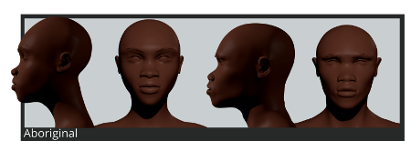

Afro phenotypes
The Afro character provides four phenotypes: Afromediterranean, Afroasian, Aboriginal and Central African.
Afromediterranean
Type diffused the North Africa, in particular in the Nile area.

Skull:
Dolichocephal.
Main features:
Long face, slight brow ridges, average face angle, small ears, straight narrow nose, thick lips, no prognathy, lower legs longer than thigh, forearm longer than upperarm and very tall stature.
Afroasian
Type derived from an ancient mix of African and Arab.

Skull:
Dolichocephal.
Main features:
Lighter skin colour than the afromediterranean, vertical face angle, broad forehead, thin lips and narrow jaw. Long-limbed but less tall than afromediterranean.
Aboriginal
Type mainly diffused in South and Equatorial Africa.

Skull:
Mesocephal.
Main features:
Short height (1.4-1.5 meters), pointed and receding chin, oblique face angle, broad and upturned nose, noticeable brow ridges, pronounced cheek bone, short legs and long trunk.
African
Type mainly diffused horizontally from Senegal to Sudan.

Skull:
Dolichocephal.
Main features:
flat root of the nose, soft and receding chin, flat and broad nose, oblique face angle, small ears, big mouth with thick lips.